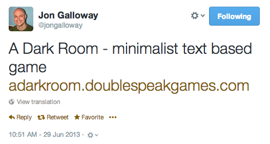
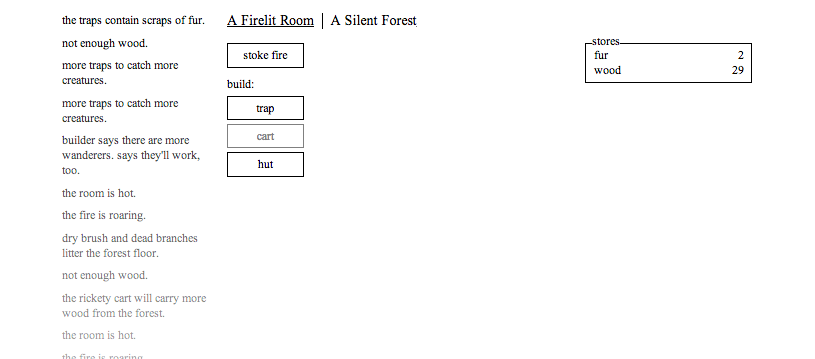
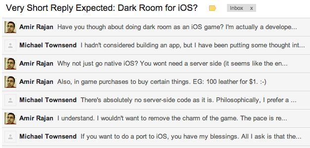
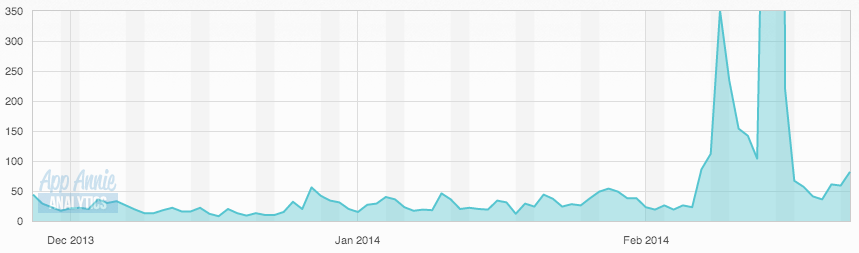
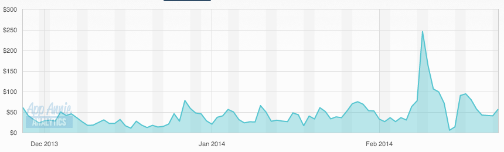

Hi, I'm Amir.
I ported

to iOS.
It took 12,000 (awesome) Lines of

A Dark Room ranks as one of the top 100 RPGs in the App Store!
And I have made millions thousands hundreds* of dollars :-)
Twitter: @amirrajan
Web: amirrajan.net
Source: github.com/amirrajan/12k-lines-of-RM
Web: amirrajan.net
Source: github.com/amirrajan/12k-lines-of-RM
How'd the heck did I get here?
Saw this...

Got addicted and played for an hour ಠ_ಠ

Then saw this...

So like any normal person curious developer I viewed source:
<!--
A Dark Room (v1.2)
==================
A minimalist text adventure by Michael Townsend.
Inspired by Candy Box (http://candies.aniwey.net/)
Please don't steal me.
-->
The game had an unexplainable charm to it so I asked Michael if I could port it:

Yay!!! Wait...
My Objective C is pretty rusty...
I don't like Interface Builder either T_T...
and I really don't like how clunky* XCode is.
My Objective C is pretty rusty...
I don't like Interface Builder either T_T...
and I really don't like how clunky* XCode is.

